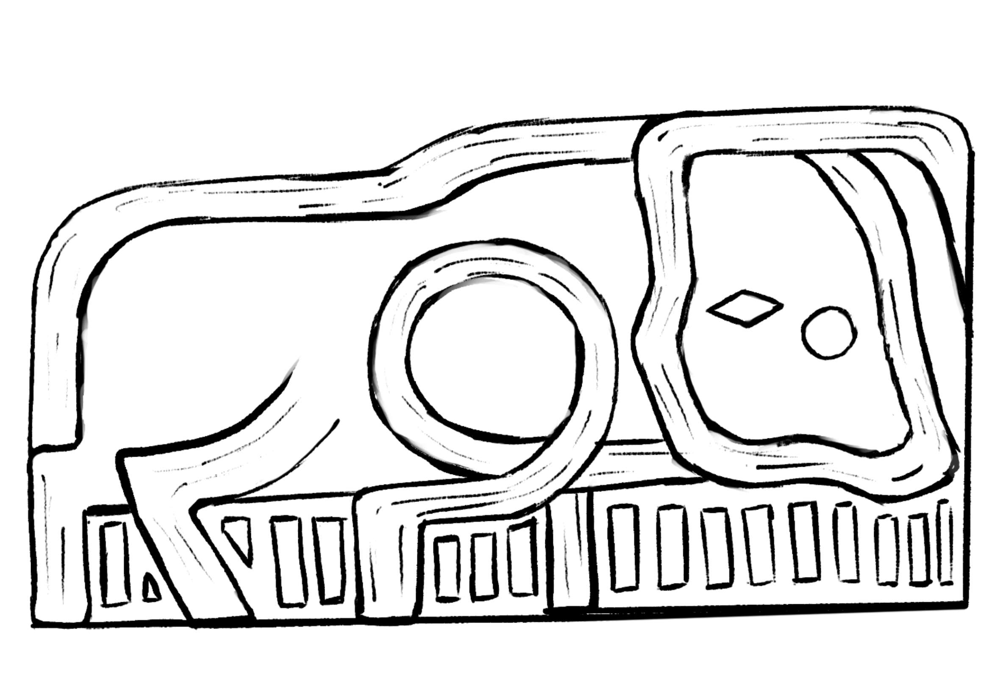

Meat
Of sundry manners and procurements, having been skewered and set above a mighty flame
- Take thou thy fresh kill, skewering lengthwise with iron, and lift it to rest above unrelenting flames.
- Order thine manservants to gently rotate the beast, that each side should take the alloted fire thereupon.
- A great basin may rest below, that drippings and fats and other waters might collect there.
- Adding to this salt, leeks, and carrots, at least, then let the waters agitate and become fragrant.
- Once roasted, the meat may be apportioned as each is due, taking the fragrant soup from beneath the beast with each one so as to greatly magnify its flavor.